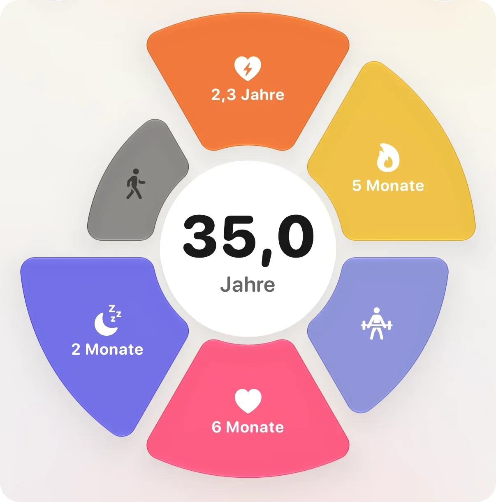
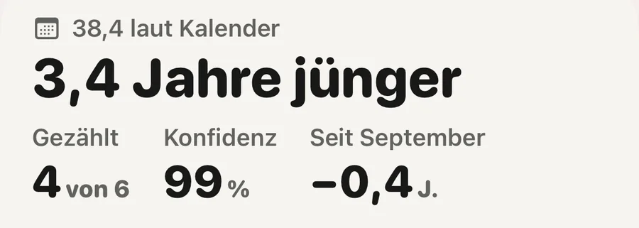

Vergleich · Langlebigkeit

Auf dem iPhone geht das heute nur mit einer App. Apples eigenes Health Age kommt mit der neuen Health-App. Am 16. November 2026 war es erst in der Entwickler-Beta von iOS 27.3, es braucht eine Apple Watch und ein iPhone mit Apple Intelligence, und Deutsch steht nicht in Apples Sprachliste. Apps, die ein biologisches Alter aus deinen Daten in Apple Health schätzen und Deutsch sprechen, sind zum Beispiel Bevel und Aera. Am meisten sagt die Zahl, wenn du eine Apple Watch trägst.
Bald, aber noch nicht auf Deutsch. Apple hat im September 2026 eine neue Health-App mit einem Bereich für Langlebigkeit vorgestellt. Die zentrale Zahl darin heißt Health Age. Laut Apple übersetzt sie Daten der Apple Watch, darunter VO2max, Ruhepuls, Schlaf und Herzfrequenzvariabilität (HRV), in ein Alter. Laborwerte wie HbA1c und LDL-Cholesterin kannst du ergänzen.
Am 3. November 2026 schrieb Apple, die neue Health-App sei in der Entwickler-Beta von iOS 27.3 und komme später im Jahr als kostenloses Update. Health Age setzt eine Apple Watch voraus, und die App läuft auf iPhones mit Apple Intelligence. Apples Sprachliste nennt Englisch, Chinesisch, Französisch, Japanisch, Koreanisch, Norwegisch, Portugiesisch, Spanisch, Türkisch und Vietnamesisch. Deutsch ist nicht dabei, und Apple schreibt, dass manche Funktionen nicht in allen Regionen und Sprachen verfügbar sind. Wann Deutsch kommt, hat Apple nicht gesagt.
Mehrere Apps lesen Apple Health und schätzen daraus ein Alter. Drei bekannte im Vergleich mit Apples eigener Lösung:
| Apple Health Age | Bevel | Athlytic | Aera | |
|---|---|---|---|---|
| Name in der App | Health Age | Biological Age | Athlytic Age | Körperalter |
| Auf Deutsch | Nein, Stand 3. Nov. | Ja | Nein, nur Englisch | Ja |
| Verfügbar | Entwickler-Beta, Update später 2026 | Im App Store | Im App Store | Im App Store |
| Liest laut Anbieter | VO2max, Ruhepuls, Schlaf, HRV; Laborwerte optional | Schlaf, Aktivität, Ruhepuls und mehr | Ruhepuls, VO2max, Schlaf, Körperzusammensetzung | Vor allem Cardiofitness, aktive Minuten, Ruhepuls, Schlafdauer, Schlafregelmäßigkeit, Schritte; Blutdruck und Taille optional |
| Zeigt den Anteil jedes Teils | In Apples Ankündigung nicht beschrieben | Nicht beschrieben | Nicht beschrieben; Was-wäre-wenn-Regler | Ja, in Monaten oder Jahren je Bereich |
| Konto | Dein Apple Account | Ja | Keins erwähnt | Keins |
| Preis (DE, 16. Nov.) | Kostenlos mit dem Update | Basis kostenlos; Pro 17,99 € im Monat oder 99,99 € im Jahr | Pro 5,99 € im Monat oder 31,99 € im Jahr | Basis kostenlos; Premium 9,99 € im Monat oder 44,99 € im Jahr |
Daneben gibt es Apps, die ein Alter aus Blutwerten berechnen, etwa nach der PhenoAge-Formel (Levine und Kollegen, 2018). Sie brauchen einen Laborbefund statt einer Uhr und messen damit etwas anderes.
Einen ausführlichen Vergleich von Bevel, Athlytic und Aera gibt es auf Englisch: Bevel, Athlytic or Aera.
Ein biologisches Alter vom Handgelenk ist eine Schätzung, kein Labortest. Es vergleicht ein paar Signale mit Menschen deines Alters und Geschlechts und schreibt den Abstand in Jahren. Zwei Apps können um ein paar Jahre auseinanderliegen und trotzdem beide fair sein, weil jede ihre eigenen Signale und Grenzen nutzt. Folge einer Zahl über Monate, statt zwei Apps an einem Tag zu vergleichen.
Die Uhr sieht weder Blutzucker noch Cholesterin, Rauchen oder Familiengeschichte. Eine gute Zahl ist kein Gesundheitszeugnis und eine schlechte keine Diagnose. Mehr dazu: Was bedeutet das biologische Alter, das deine Uhr zeigt?

Körperalter neben dem KalenderalterWie weit dein Körperalter von deinem Kalenderalter entfernt ist, wie viele Bereiche zählen und wie sicher Aera ist.
Aera, für iPhone und Apple Watch
Aera berechnet dein Körperalter auf deinem iPhone aus dem, was Apple Health schon gespeichert hat, und zeigt für jeden Bereich, wie viele Monate oder Jahre er hinzufügt oder abzieht. Jeden Montag liest es deine letzten Wochen neu, sodass eine ruhige oder volle Woche die Zahl nur wenig bewegt. Es liegt nie mehr als neun Jahre von deinem Kalenderalter entfernt. Hinter jeder Zahl steht ein kurzer Artikel mit Quellen, auf Deutsch.
Es gibt kein Konto. Dein heutiges Körperalter und seine letzten 30 Tage sind kostenlos, ältere Monate gehören zu Premium. Das Körperalter ist eine Schätzung für dein Wohlbefinden im Alltag, kein medizinisches Alter. Aera ist kein Medizinprodukt.
Noch nicht auf Deutsch. Apples Health Age kommt mit der neuen Health-App, war am 16. November 2026 in der Entwickler-Beta von iOS 27.3 und steht nicht in Apples Sprachliste vom 3. November. Es braucht eine Apple Watch und ein iPhone mit Apple Intelligence.
Unter anderem Bevel und Aera. Beide lesen Apple Health und haben eine deutsche Oberfläche. Athlytic zeigt ein Athlytic Age, aber nur auf Englisch.
Für eine aussagekräftige Zahl ja, oder eine andere Uhr, die in Apple Health schreibt. VO2max und Ruhepuls, die stärksten Signale, misst das iPhone allein nicht.
Es ist eine Schätzung, kein Labortest. Lies es als Richtung über Wochen und Monate. Zwei Apps können um ein paar Jahre abweichen und trotzdem beide fair sein.
Verwandte Ratgeber: Biologisches Alter auf der Apple Watch · Ruhepuls auf der Apple Watch · Wie genau ist VO2max auf der Apple Watch?
 Oder mit dem iPhone scannen
Oder mit dem iPhone scannenKostenlos laden. Ohne Konto. Läuft mit der Uhr, die du schon trägst.